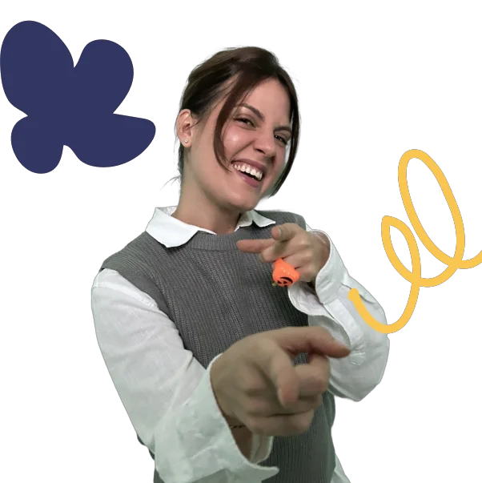
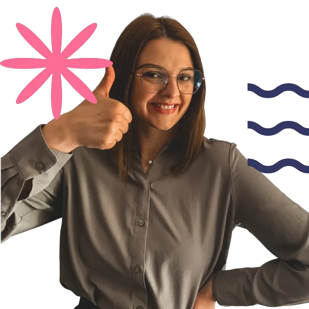
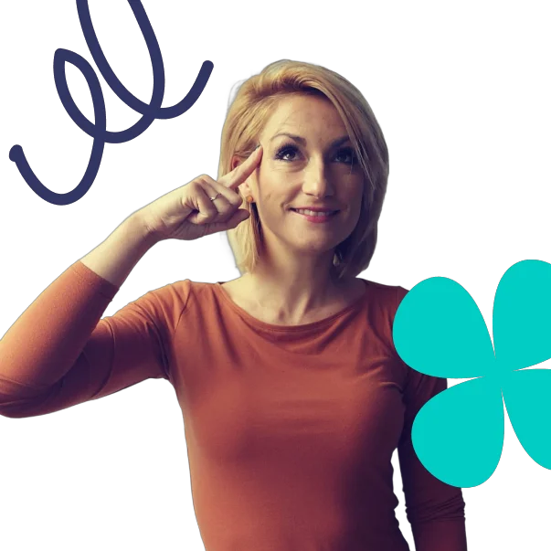

Nazad na početnu
Nazad na početnu
Nazad na početnu
Nazad na početnu
Naša nastava nije improvizacija niti aplikacija sa zadacima. To je pažljivo dizajniran sistem koji gradi znanje, sigurnost i ljubav prema jeziku.
Svako dijete počinje tamo gdje zaista jeste - ne tamo gdje bismo željeli da bude.
Kratko ponavljanje prethodnog i razgovor na bosanskom da se dijete ugrije
Djeca govore, pitaju, reaguju - ne slušaju predavanje
Strukturirana vježba, kratak pregled napretka, zadatak za sljedeći put
Ne biramo nastavnice samo po obrazovanju. Biramo one koje razumiju djecu koja žive između dvije kulture i dva jezika.

"Djeca ne uče jezik - ona ga doživljavaju. Moj posao je stvoriti to iskustvo."

"Stidljivo dijete koje progovori bosanski - to je moj omiljeni trenutak u svakom ciklusu."

"U ovim godinama dijete može zavoliti jezik - ako mu damo pravi razlog."
Probni čas je besplatan i bez obaveza. Nastavnica procijeni nivo i preporuči pravi program.
Bez kreditne kartice. Bez obaveze upisa.